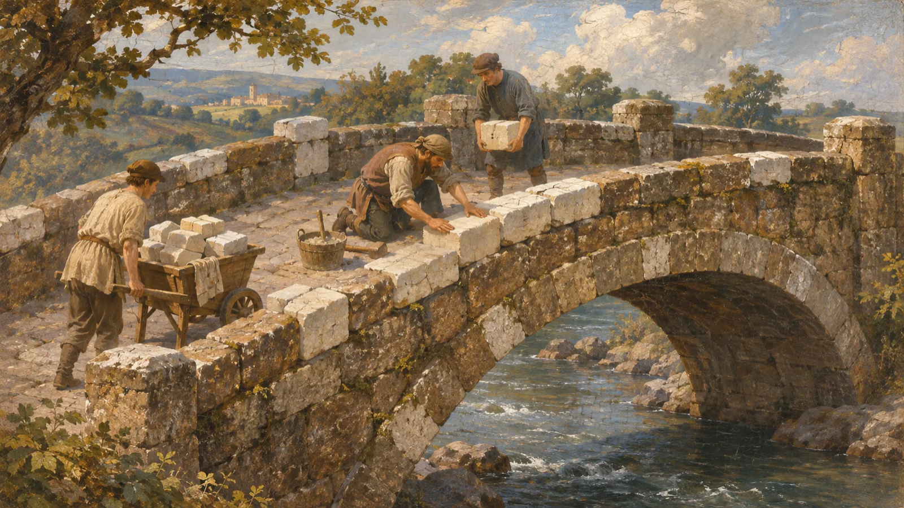

所蔵品
リュネ橋の修繕

解説
古い石橋の修繕の場面を描いた作品。川面に架かる橋の上と足場に職人たちが配され、傷んだ石を一つずつ取り外し、新しい石をはめ込む作業の各段階が一枚の画面の中に同時に描かれている。手前には取り外された古い石が積まれ、その欠けや苔が丁寧に描き分けられている。
描かれているのはリュネ橋とされる。橋そのものは現存せず、いつ、どこに架かっていたかを示す記録も乏しい。本作は、橋がまだ架かっていた頃に描かれた古い絵を、統9世紀頃に別の画家が写し直したものと伝わる。原画は失われ、写した画家の名も分かっていない。板に描かれた油彩で、描法は原画の時代ではなく、写し直された統9世紀頃のものである。
この橋は「傷んだ石を一つずつ取り替えた橋は、同じ橋か」という問い、いわゆるリュネ橋の逆説の名の由来となった。橋も原画も失われたいま、本作はその橋の姿を伝える数少ない手がかりである。古い絵を新しい手で写し直した本作そのものが、逆説と同じ問いを抱えているとも言われる。